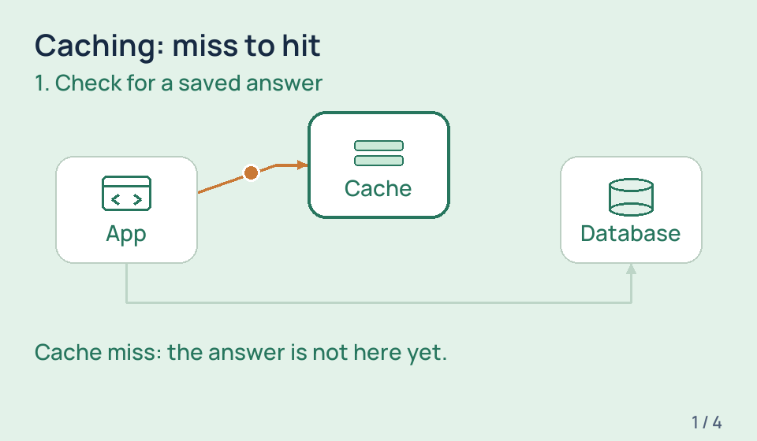
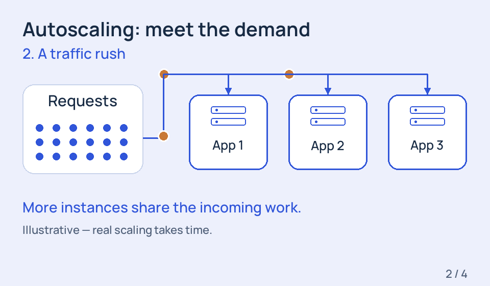

Google account ready
Try this
From frontend developer to owning what runs behind it. Learn Google Cloud by seeing it, trying it, and making it work.
One click can involve several services. Follow the little packet to see who does what.
A simplified learning example, not QuickAds’ production architecture.
Five chapters. Thirty small wins. Start where you are.
45–60 min · before Day 1
A learning project with trial status, credit balance, and spending alerts checked.
Play it. Pause it. Make the connection. These tiny lessons make cloud ideas visible.

A cache keeps a reusable answer close by. Watch a miss become a hit—and see which database work disappears.

An instance is a running copy of your app. See how adding copies helps with a rush, and how they scale back down.
Move the sliders. Notice how traffic and time change the amount of application work.
A learning model, not a price quote. This sums request durations; it is not billable instance time. Real charges also depend on CPU, memory, concurrency, billing mode, storage and network use.
Your ad service needs to read image files from one storage bucket. What access should it get?
Choose an answer to see the reasoning.
Meet IAM: who can do whatA short video, a guided lab, or a deeper dive. Pick what you need today.
You don’t need to know all of GCP. Keep making the next thing understandable.
Continue learningSaved in this browser. Take a backup to another device.